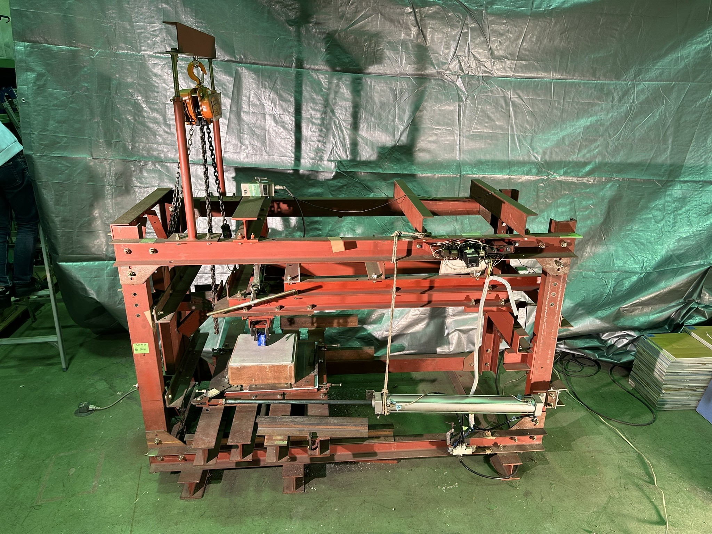
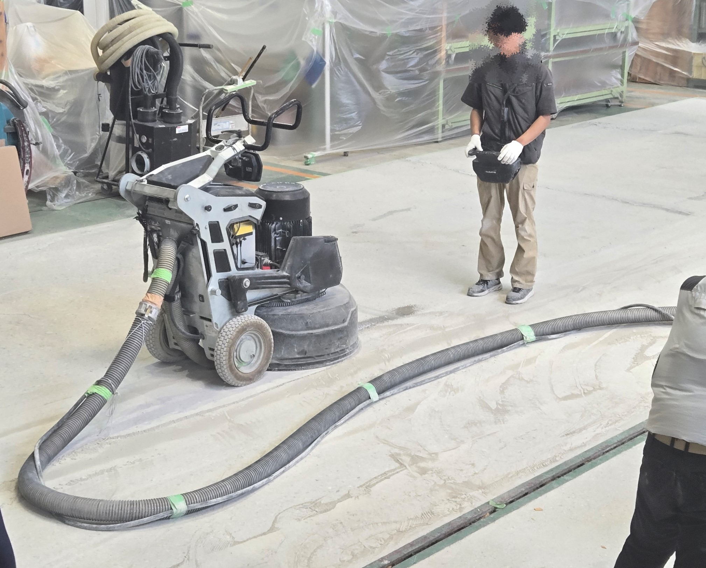

床材表面の微細な表面凹凸が安全性や快適性に及ぼす影響を明らかにする。
床に存在する微細な表面凹凸は、安全性にかかわるすべりやすさや擦り傷の生じやすさから、意匠性にかかわる清掃性や光沢度に影響を及ぼします。また、コンクリート床下地においても、その微細な表面凹凸は接着性やそれに起因する耐荷重性などと強く関係しています。こうした性能の多くには妥当な測定方法が存在している一方で、微細な表面凹凸が各性能に影響するメカニズムは異なることから、体系的に整理されてはいません。
そこで本研究室では、材料ごとに床の微細な表面凹凸を定量的に評価する方法を研究しております。具体的には、表面凹凸のプロファイルをFFT解析し、波長ごとの振幅と性能の関係を調査しています。こうした研究は材料メーカーの方々が複数の要求性能を満たすことのできる商品を開発する際や、材料を施工する際の適切な処理を行う際に、その一助となるものであると考えております。
(画像上：材料表面の凹凸プロファイル 画像左下：耐動荷重性の試験機 画像右下：コンクリート表面の凹凸性状に係る研磨作業の様子)